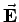
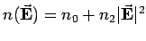
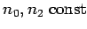

in der nichtlinearen Optik, wo der Brechungsindex n von der elektrischen Feldstärke  abhängig ist, wie z.B. beim KERR-Effekt, bei dem  mit  gilt, und
in der Hydrodynamik selbstgravitierender Scheiben, wo sie die Beschreibung von galaktischen Spiralarmen gestattet.